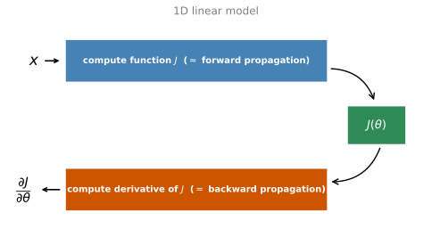
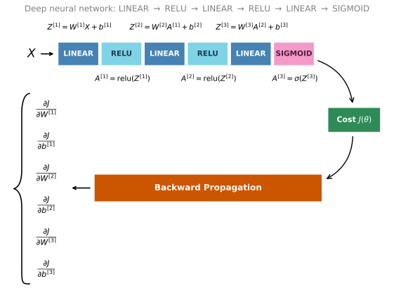
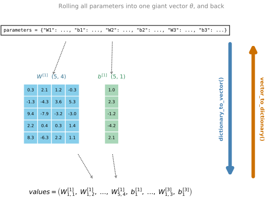

import numpy as npLab: Gradient Checking
deep-learning
lab
gradient-checking
Verify backpropagation with gradient checking, from a 1D linear model to a full 3-layer network, and hunt down two planted backprop bugs.
ImportantTwo changes from the original notebook
This page runs on NumPy 2.4.4 and Python 3.13. Two things changed (updated 2026-08-31).
- The helper and test-case modules are reproduced inline rather than imported, so
gc_utils.pyandtestCases.pycan be read where they are used. - The stated acceptance threshold was made consistent. The prose said the difference should fall below \(10^{-7}\) while both implementations classify anything up to \(2 \times 10^{-7}\) as correct, which is the figure now quoted.
The one-dimensional and N-dimensional checks, the deliberately buggy backward pass and the pass/fail print (which is this lab’s actual subject matter) are the assignment’s own.
This lab is the third and final programming assignment of the module, and it puts the gradient checking sections into practice. You will implement gradient checking for a tiny 1D model first, then scale it up to a full 3-layer network, and finish by using it the way it is used in real life, to catch actual bugs in a backpropagation implementation.
Problem Statement
You are part of a team working to make mobile payments available globally, and you are asked to build a deep learning model to detect fraud. Whenever someone makes a payment, you want to see if the payment might be fraudulent, such as when the user’s account has been taken over by a hacker.
You already know that backpropagation is quite challenging to implement and sometimes has bugs. Because this is a mission-critical application, your company’s CEO wants to be really certain that your implementation of backpropagation is correct. Your CEO says, “Give me proof that your backpropagation is actually working!” To give this reassurance, you are going to use gradient checking.
Packages and Helpers
The whole lab runs on plain NumPy.
The course provides a helper file, gc_utils.py, with the activation functions and the three reshaping utilities that convert between the parameters dictionary and the giant vector \(\theta\). They are reproduced in the collapsed callout below, together with the seeded test case from testCases.py.
NoteLab Files Download
Everything this lab needs, ready to download. There is no dataset; the test case generates its own seeded inputs.
- gc_utils.py (2 KB), the reshaping helpers and activations
- testCases.py (1 KB), the seeded test case
NoteHelper Functions from gc_utils.py and testCases.py
def sigmoid(x):
"""Compute the sigmoid of x."""
s = 1 / (1 + np.exp(-x))
return s
def relu(x):
"""Compute the relu of x."""
s = np.maximum(0, x)
return s
def dictionary_to_vector(parameters):
"""Roll the parameters dictionary into a single column vector."""
keys = []
count = 0
for key in ["W1", "b1", "W2", "b2", "W3", "b3"]:
# flatten parameter
new_vector = np.reshape(parameters[key], (-1, 1))
keys = keys + [key] * new_vector.shape[0]
if count == 0:
theta = new_vector
else:
theta = np.concatenate((theta, new_vector), axis=0)
count = count + 1
return theta, keys
def vector_to_dictionary(theta):
"""Unroll the parameters dictionary from a single column vector."""
parameters = {}
parameters["W1"] = theta[: 20].reshape((5, 4))
parameters["b1"] = theta[20: 25].reshape((5, 1))
parameters["W2"] = theta[25: 40].reshape((3, 5))
parameters["b2"] = theta[40: 43].reshape((3, 1))
parameters["W3"] = theta[43: 46].reshape((1, 3))
parameters["b3"] = theta[46: 47].reshape((1, 1))
return parameters
def gradients_to_vector(gradients):
"""Roll the gradients dictionary into a single column vector."""
count = 0
for key in ["dW1", "db1", "dW2", "db2", "dW3", "db3"]:
# flatten parameter
new_vector = np.reshape(gradients[key], (-1, 1))
if count == 0:
theta = new_vector
else:
theta = np.concatenate((theta, new_vector), axis=0)
count = count + 1
return theta
def gradient_check_n_test_case():
np.random.seed(1)
x = np.random.randn(4, 3)
y = np.array([1, 1, 0])
W1 = np.random.randn(5, 4)
b1 = np.random.randn(5, 1)
W2 = np.random.randn(3, 5)
b2 = np.random.randn(3, 1)
W3 = np.random.randn(1, 3)
b3 = np.random.randn(1, 1)
parameters = {"W1": W1, "b1": b1, "W2": W2, "b2": b2, "W3": W3, "b3": b3}
return x, y, parametersHow Does Gradient Checking Work?
Backpropagation computes the gradients \(\frac{\partial J}{\partial \theta}\), where \(\theta\) denotes the parameters of the model, and \(J\) is computed using forward propagation and the loss function. Because forward propagation is relatively easy to implement, you are confident you got that right, so you are almost 100% sure that the cost \(J\) is computed correctly. You can therefore use the code that computes \(J\) to verify the code that computes \(\frac{\partial J}{\partial \theta}\), through the definition of the derivative,
\[ \frac{\partial J}{\partial \theta} = \lim_{\varepsilon \to 0} \frac{J(\theta + \varepsilon) - J(\theta - \varepsilon)}{2 \varepsilon} \]
exactly the two-sided difference from the notes. (If the \(\lim_{\varepsilon \to 0}\) notation is unfamiliar, it is just a way of saying “when \(\varepsilon\) is really, really small.”) You know two things. \(\frac{\partial J}{\partial \theta}\) is what you want to make sure you are computing correctly, and you can compute \(J(\theta + \varepsilon)\) and \(J(\theta - \varepsilon)\), since you are confident the implementation of \(J\) is correct. Time to convince your CEO.
1-Dimensional Gradient Checking
Consider a 1D linear function \(J(\theta) = \theta x\). The model contains only a single real-valued parameter \(\theta\) and takes \(x\) as input. You will implement code to compute \(J\) and its derivative \(\frac{\partial J}{\partial \theta}\), then use gradient checking to make sure the derivative computation is correct.

The diagram shows the key computation steps. First start with \(x\), then evaluate the function \(J(x)\) (forward propagation). Then compute the derivative \(\frac{\partial J}{\partial \theta}\) (backward propagation).
Exercise 1, forward_propagation
Implement the forward propagation. For this simple function, just compute \(J\).
def forward_propagation(x, theta):
"""
Implement the linear forward propagation (compute J) presented in Figure 1 (J(theta) = theta * x)
Arguments:
x -- a real-valued input
theta -- our parameter, a real number as well
Returns:
J -- the value of function J, computed using the formula J(theta) = theta * x
"""
J = theta * x
return J
x, theta = 2, 4
J = forward_propagation(x, theta)
print("J = " + str(J))J = 8Exercise 2, backward_propagation
Now implement the backward propagation step, the derivative of \(J(\theta) = \theta x\) with respect to \(\theta\). To save you from doing the calculus, you should get \(d\theta = \frac{\partial J}{\partial \theta} = x\).
def backward_propagation(x, theta):
"""
Computes the derivative of J with respect to theta (see Figure 1).
Arguments:
x -- a real-valued input
theta -- our parameter, a real number as well
Returns:
dtheta -- the gradient of the cost with respect to theta
"""
dtheta = x
return dtheta
x, theta = 3, 4
dtheta = backward_propagation(x, theta)
print("dtheta = " + str(dtheta))dtheta = 3Exercise 3, gradient_check
To show that backward_propagation() is correctly computing the gradient, implement gradient checking. First compute gradapprox using the two-sided difference with a small \(\varepsilon\), in five steps.
- \(\theta^{+} = \theta + \varepsilon\)
- \(\theta^{-} = \theta - \varepsilon\)
- \(J^{+} = J(\theta^{+})\)
- \(J^{-} = J(\theta^{-})\)
- \(gradapprox = \frac{J^{+} - J^{-}}{2\varepsilon}\)
Then compute the gradient using backward propagation and store it in grad, and finally compute the relative difference
\[ difference = \frac{\left\| grad - gradapprox \right\|_2}{\left\| grad \right\|_2 + \left\| gradapprox \right\|_2} \]
in three steps, the numerator with np.linalg.norm(...), the denominator with two more calls to np.linalg.norm(...), and the division. If this difference is small (the check below uses \(2 \times 10^{-7}\) as its cutoff), you can be quite confident the gradient is computed correctly.
def gradient_check(x, theta, epsilon=1e-7, print_msg=False):
"""
Implement gradient checking for the 1D linear model.
Arguments:
x -- a float input
theta -- our parameter, a float as well
epsilon -- tiny shift to the input to compute approximated gradient
Returns:
difference -- difference between the approximated gradient and the backward propagation gradient
"""
# Compute gradapprox using the two-sided difference. epsilon is small enough, no need to worry about the limit.
theta_plus = theta + epsilon # Step 1
theta_minus = theta - epsilon # Step 2
J_plus = forward_propagation(x, theta_plus) # Step 3
J_minus = forward_propagation(x, theta_minus) # Step 4
gradapprox = (J_plus - J_minus) / (2 * epsilon) # Step 5
# Check if gradapprox is close enough to the output of backward_propagation()
grad = backward_propagation(x, theta)
numerator = np.linalg.norm(grad - gradapprox) # Step 1'
denominator = np.linalg.norm(grad) + np.linalg.norm(gradapprox) # Step 2'
difference = numerator / denominator # Step 3'
if print_msg:
if difference > 2e-7:
print("\033[93m" + "There is a mistake in the backward propagation! difference = " + str(difference) + "\033[0m")
else:
print("\033[92m" + "Your backward propagation works perfectly fine! difference = " + str(difference) + "\033[0m")
return difference
x, theta = 3, 4
difference = gradient_check(x, theta, print_msg=True)Your backward propagation works perfectly fine! difference = 7.814075313343006e-11
The difference is smaller than the \(2 \times 10^{-7}\) threshold, so you can have high confidence that the gradient in backward_propagation() is correct.
Now, in the more general case, the cost function \(J\) has more than a single 1D input. When training a neural network, \(\theta\) actually consists of multiple matrices \(W^{[l]}\) and biases \(b^{[l]}\), so it is important to know how to do a gradient check with higher-dimensional inputs.
N-Dimensional Gradient Checking
The figure below describes the forward and backward propagation of your fraud detection model, a 3-layer network with the by-now familiar architecture.

Below are the implementations provided for forward_propagation_n and backward_propagation_n, where n in the name signals that they work in n dimensions. The forward pass also computes the cost, since gradient checking needs it.
def forward_propagation_n(X, Y, parameters):
"""
Implements the forward propagation (and computes the cost) for the 3-layer model.
Arguments:
X -- training set for m examples
Y -- labels for m examples
parameters -- python dictionary containing your parameters "W1", "b1", "W2", "b2", "W3", "b3":
W1 -- weight matrix of shape (5, 4)
b1 -- bias vector of shape (5, 1)
W2 -- weight matrix of shape (3, 5)
b2 -- bias vector of shape (3, 1)
W3 -- weight matrix of shape (1, 3)
b3 -- bias vector of shape (1, 1)
Returns:
cost -- the cost function (logistic cost for m examples)
cache -- a tuple with the intermediate values (Z1, A1, W1, b1, Z2, A2, W2, b2, Z3, A3, W3, b3)
"""
# retrieve parameters
m = X.shape[1]
W1 = parameters["W1"]
b1 = parameters["b1"]
W2 = parameters["W2"]
b2 = parameters["b2"]
W3 = parameters["W3"]
b3 = parameters["b3"]
# LINEAR -> RELU -> LINEAR -> RELU -> LINEAR -> SIGMOID
Z1 = np.dot(W1, X) + b1
A1 = relu(Z1)
Z2 = np.dot(W2, A1) + b2
A2 = relu(Z2)
Z3 = np.dot(W3, A2) + b3
A3 = sigmoid(Z3)
# Cost
log_probs = np.multiply(-np.log(A3), Y) + np.multiply(-np.log(1 - A3), 1 - Y)
cost = 1. / m * np.sum(log_probs)
cache = (Z1, A1, W1, b1, Z2, A2, W2, b2, Z3, A3, W3, b3)
return cost, cachedef backward_propagation_n(X, Y, cache):
"""
Implement the backward propagation for the 3-layer model.
Arguments:
X -- input datapoint, of shape (input size, 1)
Y -- true "label"
cache -- cache output from forward_propagation_n()
Returns:
gradients -- A dictionary with the gradients of the cost with respect to each parameter, activation and pre-activation variables.
"""
m = X.shape[1]
(Z1, A1, W1, b1, Z2, A2, W2, b2, Z3, A3, W3, b3) = cache
dZ3 = A3 - Y
dW3 = 1. / m * np.dot(dZ3, A2.T)
db3 = 1. / m * np.sum(dZ3, axis=1, keepdims=True)
dA2 = np.dot(W3.T, dZ3)
dZ2 = np.multiply(dA2, np.int64(A2 > 0))
dW2 = 1. / m * np.dot(dZ2, A1.T) * 2
db2 = 1. / m * np.sum(dZ2, axis=1, keepdims=True)
dA1 = np.dot(W2.T, dZ2)
dZ1 = np.multiply(dA1, np.int64(A1 > 0))
dW1 = 1. / m * np.dot(dZ1, X.T)
db1 = 4. / m * np.sum(dZ1, axis=1, keepdims=True)
gradients = {"dZ3": dZ3, "dW3": dW3, "db3": db3,
"dA2": dA2, "dZ2": dZ2, "dW2": dW2, "db2": db2,
"dA1": dA1, "dZ1": dZ1, "dW1": dW1, "db1": db1}
return gradientsIf you had just implemented these functions, you might not have high confidence that they work correctly. So implement gradient checking to help verify.
From Dictionary to Vector
As in the 1D case, you want to compare gradapprox to the gradient computed by backpropagation, using the same two-sided difference formula. However, \(\theta\) is not a scalar anymore. It is a dictionary called parameters. The helper dictionary_to_vector() converts the dictionary into a vector called values, obtained by reshaping all parameters (\(W^{[1]}, b^{[1]}, W^{[2]}, b^{[2]}, W^{[3]}, b^{[3]}\)) into column vectors and concatenating them, exactly the giant \(\theta\) vector from the notes. The inverse function, vector_to_dictionary(), turns the vector back into the dictionary the network needs.

The gradients dictionary is likewise converted into a vector grad using gradients_to_vector(), so you do not need to worry about that part. Now, for every single parameter in the vector, you apply the same procedure as in the 1D gradient_check exercise, storing each gradient approximation in a vector gradapprox. If the check goes as expected, each value in this approximation must match the real gradient values stored in the grad vector.
Exercise 4, gradient_check_n
Here is pseudo-code to guide the implementation. For each i in num_parameters:
- To compute
J_plus[i]:- Set \(\theta^{+}\) to
np.copy(parameters_values) - Set \(\theta^{+}_i\) to \(\theta^{+}_i + \varepsilon\)
- Calculate \(J^{+}_i\) using
forward_propagation_n(x, y, vector_to_dictionary(\(\theta^{+}\)))
- Set \(\theta^{+}\) to
- To compute
J_minus[i], do the same thing with \(\theta^{-}\) - Compute \(gradapprox[i] = \frac{J^{+}_i - J^{-}_i}{2\varepsilon}\)
You get a vector gradapprox, where gradapprox[i] is an approximation of the gradient with respect to parameters_values[i]. Compare it to the grad vector from backpropagation with the same three norm steps as in the 1D case.
def gradient_check_n(parameters, gradients, X, Y, epsilon=1e-7, print_msg=False):
"""
Checks if backward_propagation_n computes correctly the gradient of the cost output by forward_propagation_n
Arguments:
parameters -- python dictionary containing your parameters "W1", "b1", "W2", "b2", "W3", "b3"
gradients -- output of backward_propagation_n, contains gradients of the cost with respect to the parameters
X -- input datapoint, of shape (input size, number of examples)
Y -- true "label"
epsilon -- tiny shift to the input to compute approximated gradient
Returns:
difference -- difference between the approximated gradient and the backward propagation gradient
"""
# Set-up variables
parameters_values, _ = dictionary_to_vector(parameters)
grad = gradients_to_vector(gradients)
num_parameters = parameters_values.shape[0]
J_plus = np.zeros((num_parameters, 1))
J_minus = np.zeros((num_parameters, 1))
gradapprox = np.zeros((num_parameters, 1))
# Compute gradapprox
for i in range(num_parameters):
# Compute J_plus[i]. "_" is used because we only care about the first output
theta_plus = np.copy(parameters_values) # Step 1
theta_plus[i] = theta_plus[i] + epsilon # Step 2
J_plus[i], _ = forward_propagation_n(X, Y, vector_to_dictionary(theta_plus)) # Step 3
# Compute J_minus[i]
theta_minus = np.copy(parameters_values) # Step 1
theta_minus[i] = theta_minus[i] - epsilon # Step 2
J_minus[i], _ = forward_propagation_n(X, Y, vector_to_dictionary(theta_minus)) # Step 3
# Compute gradapprox[i]
gradapprox[i] = (J_plus[i] - J_minus[i]) / (2 * epsilon)
# Compare gradapprox to backward propagation gradients by computing difference.
numerator = np.linalg.norm(grad - gradapprox) # Step 1'
denominator = np.linalg.norm(grad) + np.linalg.norm(gradapprox) # Step 2'
difference = numerator / denominator # Step 3'
if print_msg:
if difference > 2e-7:
print("\033[93m" + "There is a mistake in the backward propagation! difference = " + str(difference) + "\033[0m")
else:
print("\033[92m" + "Your backward propagation works perfectly fine! difference = " + str(difference) + "\033[0m")
return difference
X, Y, parameters = gradient_check_n_test_case()
cost, cache = forward_propagation_n(X, Y, parameters)
gradients = backward_propagation_n(X, Y, cache)
difference = gradient_check_n(parameters, gradients, X, Y, 1e-7, True)There is a mistake in the backward propagation! difference = 0.2850931567761624
Bug Hunt
It seems that there were errors in the backward_propagation_n code! Good thing you implemented the gradient check. This is exactly the workflow from the implementation notes: implement forward prop, implement backprop, see grad check report a big value, and go hunting.
Look back at backward_propagation_n and compare it against the correct backpropagation equations (hint from the course: check dW2 and db1). Two lines are wrong.
dW2is computed as1. / m * np.dot(dZ2, A1.T) * 2, but the correct gradient has no factor of 2.db1is computed as4. / m * np.sum(dZ1, ...), but the correct coefficient is1. / m.
Both bugs live in the derivative computations for specific parameters, which is exactly what the component-wise inspection tip from the notes would have surfaced, since the far-off entries of \(d\theta_{\text{approx}} - d\theta\) all correspond to \(dW^{[2]}\) and \(db^{[1]}\). Fix the two lines and run the gradient check again.
def backward_propagation_n(X, Y, cache):
"""Corrected backward propagation for the 3-layer model."""
m = X.shape[1]
(Z1, A1, W1, b1, Z2, A2, W2, b2, Z3, A3, W3, b3) = cache
dZ3 = A3 - Y
dW3 = 1. / m * np.dot(dZ3, A2.T)
db3 = 1. / m * np.sum(dZ3, axis=1, keepdims=True)
dA2 = np.dot(W3.T, dZ3)
dZ2 = np.multiply(dA2, np.int64(A2 > 0))
dW2 = 1. / m * np.dot(dZ2, A1.T) # fixed: removed the factor of 2
db2 = 1. / m * np.sum(dZ2, axis=1, keepdims=True)
dA1 = np.dot(W2.T, dZ2)
dZ1 = np.multiply(dA1, np.int64(A1 > 0))
dW1 = 1. / m * np.dot(dZ1, X.T)
db1 = 1. / m * np.sum(dZ1, axis=1, keepdims=True) # fixed: 4./m is now 1./m
gradients = {"dZ3": dZ3, "dW3": dW3, "db3": db3,
"dA2": dA2, "dZ2": dZ2, "dW2": dW2, "db2": db2,
"dA1": dA1, "dZ1": dZ1, "dW1": dW1, "db1": db1}
return gradients
cost, cache = forward_propagation_n(X, Y, parameters)
gradients = backward_propagation_n(X, Y, cache)
difference = gradient_check_n(parameters, gradients, X, Y, 1e-7, True)Your backward propagation works perfectly fine! difference = 1.1890913023739721e-07
The difference drops from about \(0.285\) to about \(10^{-7}\), and gradient check declares the derivative computation correct. You can now be confident that your deep learning model for fraud detection is working correctly, and you can even use this to convince your CEO.
Two closing notes, both echoed from the implementation notes.
- Gradient checking is slow. Approximating the gradient with \(\frac{\partial J}{\partial \theta} \approx \frac{J(\theta + \varepsilon) - J(\theta - \varepsilon)}{2\varepsilon}\) is computationally costly (this small 47-parameter example already needed 94 forward passes). For this reason, gradient checking does not run at every iteration during training, just a few times to check that the gradient is correct.
- Gradient checking, at least as presented here, does not work with dropout. You would usually run the gradient check without dropout to make sure backprop is correct, and then add dropout.
ImportantWhat to Remember from This Lab
- Gradient checking verifies closeness between the gradients from backpropagation and the numerical approximation of the gradient, computed using forward propagation.
- Gradient checking is slow, so it does not run in every iteration of training. Use it only to make sure the code is correct, then turn it off and use backprop for the actual learning process.